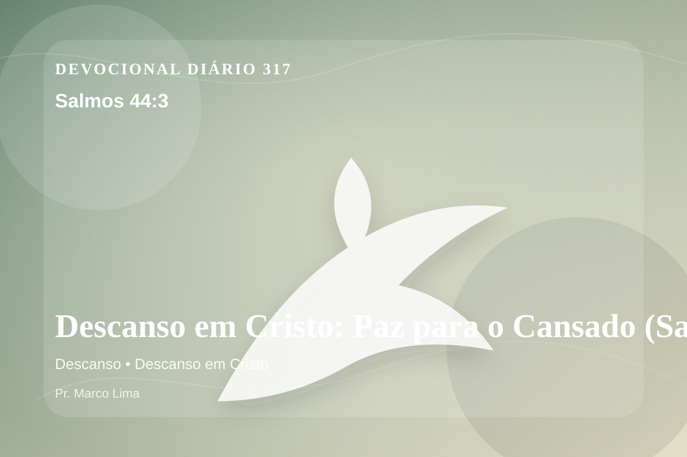

Descanso em Cristo: Paz para o Cansado (Salmos 44:3)
Porque não conquistaram a terra pelas espadas deles, nem o braço deles os salvou; mas sim tua mão direita e o teu braço, e a luz de teu rosto; porque tu os favoreceste.
Pensamento
A mesma passagem pode tratar uma nova área do coração quando ouvimos Deus com humildade. A leitura de hoje convida você a diminuir o ruído, abrir a Bíblia com humildade e deixar que Salmos 44:3 fale com profundidade.
Salmos 44:3 chama o coração a ouvir Deus com reverência e responder com fé prática. A Palavra não foi dada para enfeitar pensamentos religiosos, mas para conduzir pessoas reais ao Senhor.
O tema de descanso precisa ser recebido com simplicidade e seriedade. Quando essa verdade encontra resistência dentro de nós, é justamente ali que o Espírito deseja trabalhar. O descanso prometido por Deus não é fuga da responsabilidade, mas alívio para a alma que deixa de tentar vencer pela própria força. Em Cristo, o coração encontra descanso porque a graça substitui o peso do merecimento.
A Palavra convida você a abandonar desculpas. Onde houver pecado, confesse; onde houver incredulidade, peça fé; onde houver cansaço, volte-se para Cristo.
Arrependimento não é apenas sentir peso na consciência; é voltar-se para Deus, abandonar o caminho que entristece o Senhor e confiar que a graça de Cristo é suficiente para perdoar e transformar.
Este é o evangelho que sustenta toda aplicação: Jesus Cristo morreu pelos pecadores, ressuscitou em vitória e chama cada pessoa a responder com fé, arrependimento e uma vida rendida ao Seu senhorio.
Deus não chama você para uma religiosidade sem vida, mas para reconciliação com Ele por meio de Cristo. Essa reconciliação começa com fé humilde e arrependimento sincero.
Se o texto trouxe consolo, adore. Se trouxe confronto, arrependa-se. Se trouxe direção, obedeça. Em tudo, volte os olhos para Cristo.
Para Praticar Hoje
- Leia Salmos 44:3 lentamente e destaque uma palavra ou expressão central do texto.
- Confesse a Deus um pecado, resistência ou frieza espiritual que esta Palavra revelou.
- Declare sua fé em Jesus Cristo e pratique hoje uma atitude concreta de arrependimento e obediência.
Oração
Senhor, onde há pressa, freia. Onde há desassossego, acalma. Salmos 44:3 me mostra que até Deus descansou. Que eu aprenda que o descanso é dádiva, não preguiça. Faz essa verdade criar raízes em mim.
{kind=link}